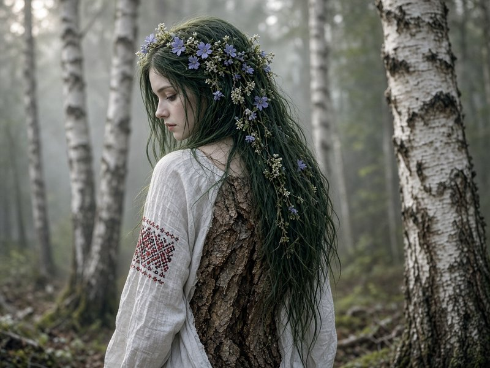

The bestiary
Step into forests, rivers, and old homesteads where folklore gave a face to the forces of nature and the mysteries of everyday life.

Twenty-two figures from Ukrainian folklore, each paired with one of the Major Arcana. Draw a card for the day, lay a three-card reading, or browse the whole deck.
This game is for reflection and for fun. The pairings are a modern reading, not a traditional village tarot, and they are not a claim about fate or the supernatural.